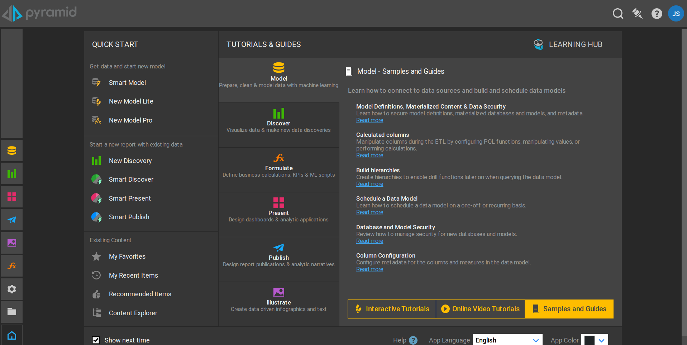
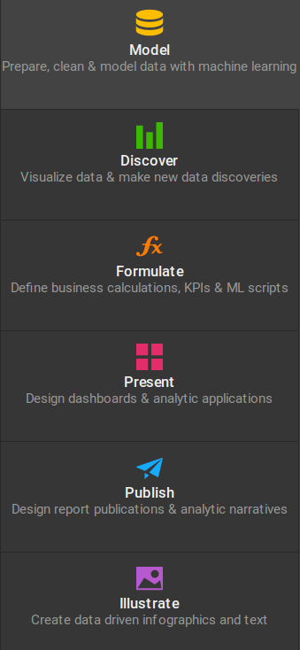
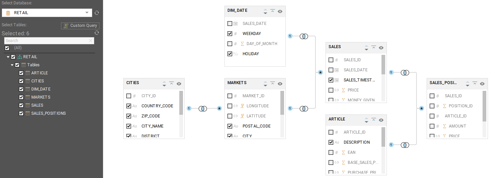
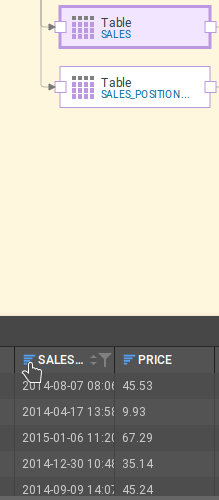
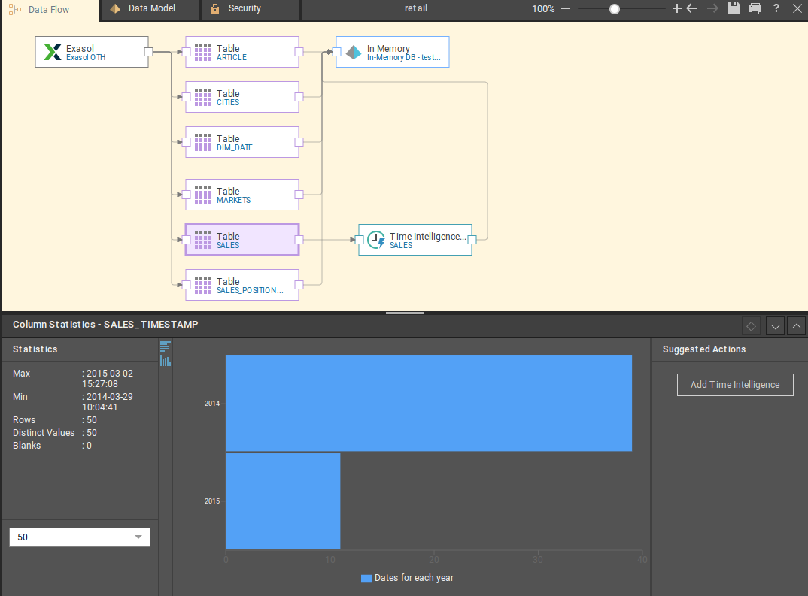
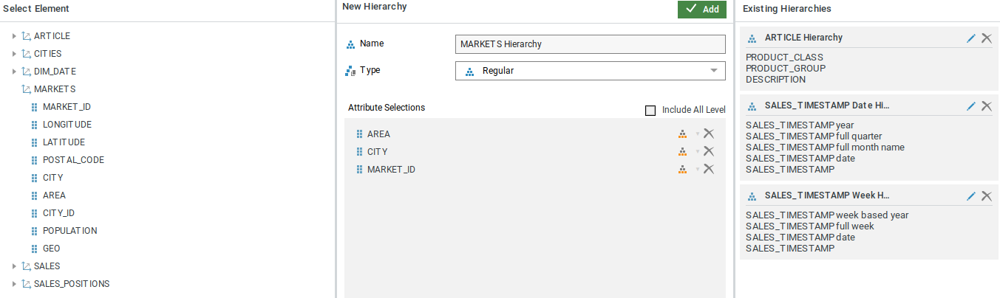
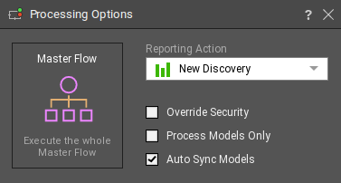
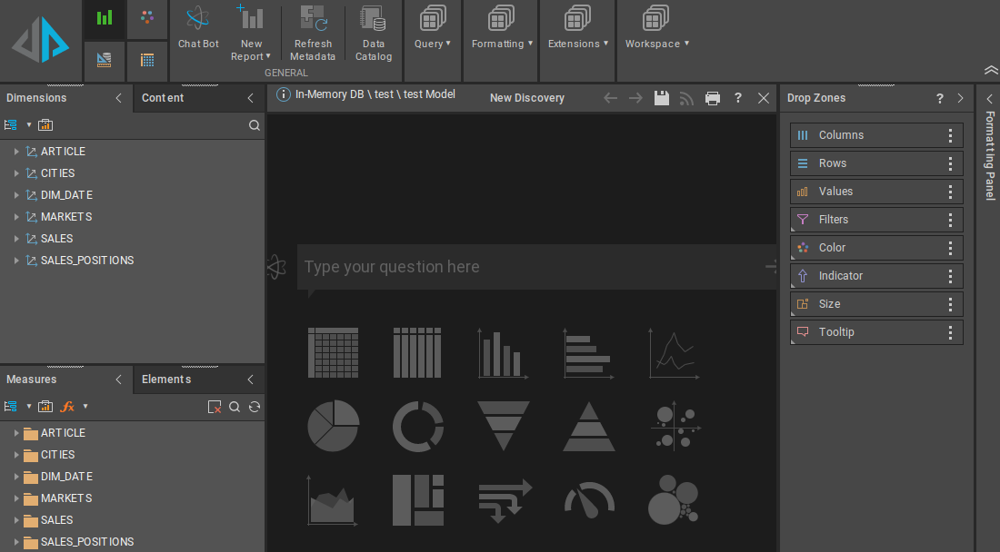
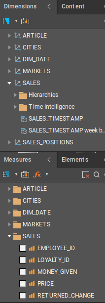

Prof. Dr.-Ing. Johannes Schildgen
johannes.schildgen@oth-regensburg.de
Data Warehousing
Chapter 6: Visualizations


Business Intelligence (BI)
Strategies and technologies to access and analyze business information.
- reporting
- dashboard development
- data mining
- predictive analytics
- ...
⇒ support business decision-making
BI Tools:
- Tableau
- Microsoft Power BI
- Qlik
- MicroStrategy
- Pyramid
- ...
Pyramid
Pyramid: Modules

Model: Connect, clean, mashup, enrich data from multiple sources (files, DBs, ...).
Discover: Create visualizations.
Formulate: Custom columns, scripts, visuals, ...
Present: Create, layout, and design interactive dashboards.
Publish: Create reports and publications for distribution.
Illustrate: Design infographics to enhance presentations and publications.
Model
Prepare, transform, structure data for analysis.
- How to import, prepare, transform data from sources?
- Schema definition (tables, columns, data types, relationships)
- Security definition (who gets access to the model?)
Different ways how to create a model:
- Smart Model (file upload)
- Direct Model (to existing db, connection details need to be provided)
- Model Lite (step-by-step wizard)
- Model Pro (Advanced)
Model User Interface
Direct Model
Directly connect to data source (e.g. Exasol DB); very limited!
Model Lite
- Data Flow: Data source → Pyramid In-Memory DB
Data Modelling
When connecting to a data warehouse (e.g., an Exasol DB), the data is not physically copied to Pyramid, only the schema information.
Time Intelligence
Add date/time-related columns to the model that will help with time-related data analysis (not available in Direct Model).
Click on table and blue icon on date/time column.
Click at "Add Time Intelligence".
Hierarchies
Construct different hierarchies amongst different columns by which users wants to analyze their data by.
Process Model
Executes data preparation steps, creates a database, publishes model definition. The definition is materialized (not the data).
Discover
Main interface in Pyramid to build visualizations, perform ad-hoc, interactive analytics, and create content for presentations and publications.
Discover: Dimensions and Measures

Right click on dimension / measure attribute:
- Add to visualization
- Aggregate dim. attribute: count, count distinct, min, max
- Extract date part (year, ...)
- Computations on measures (round, sum, variance, ...)
Ad-hoc Analysis
- Hierarchies can be expanded and collapsed
- Drill down / up / to level (for hierarchical attributes)
- Dice: fix attributes to a specific value
Maps
Bubble Maps, Shape Maps, and Heat Maps can be created using ...
- longitude and latitude attributes
- city or country attribute (GeoCode)
- GeoCode in Model (generates longitude/latitude attributes)